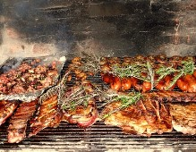

Puede estar compuesto por multitud de tipos de carnes y cortes, incluso es muy habitual la parrillada de verduras.Suele llevar carne vacuna, chorizos, morcillas y achuras (partes de la vaca), se suele cocinar con carbón vegetal o madera y dependiendo de la carne, el proceso de cocción suele oscilar entre los 40 minutos y las 2 horas.
